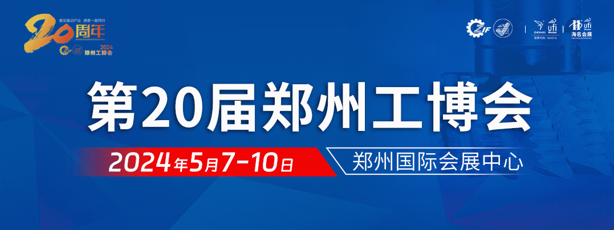
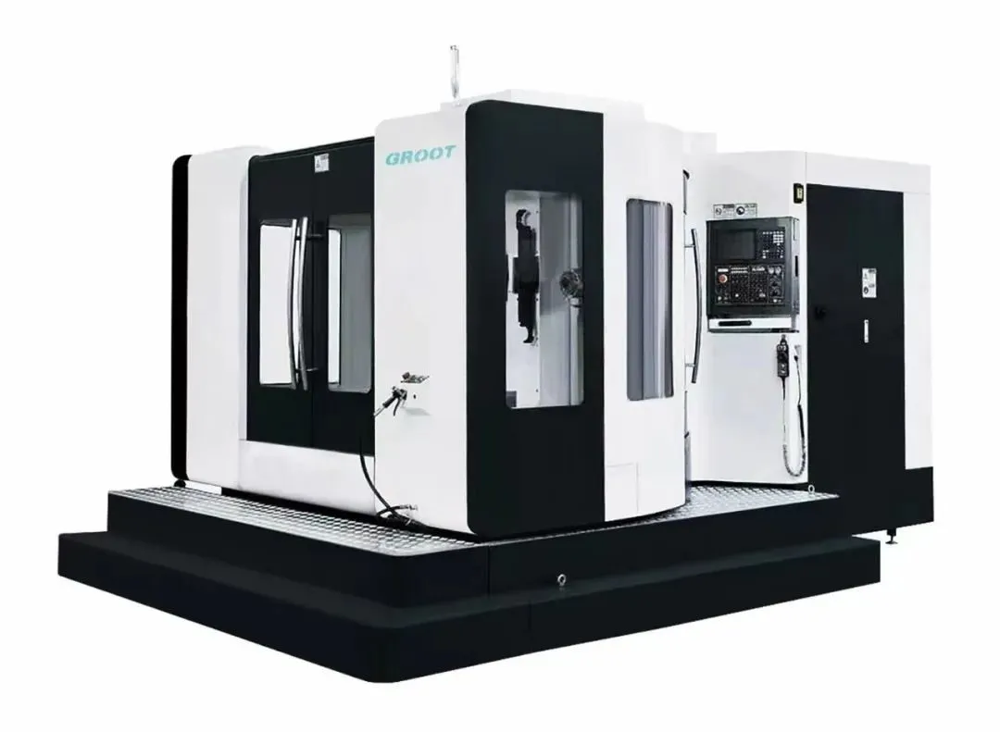
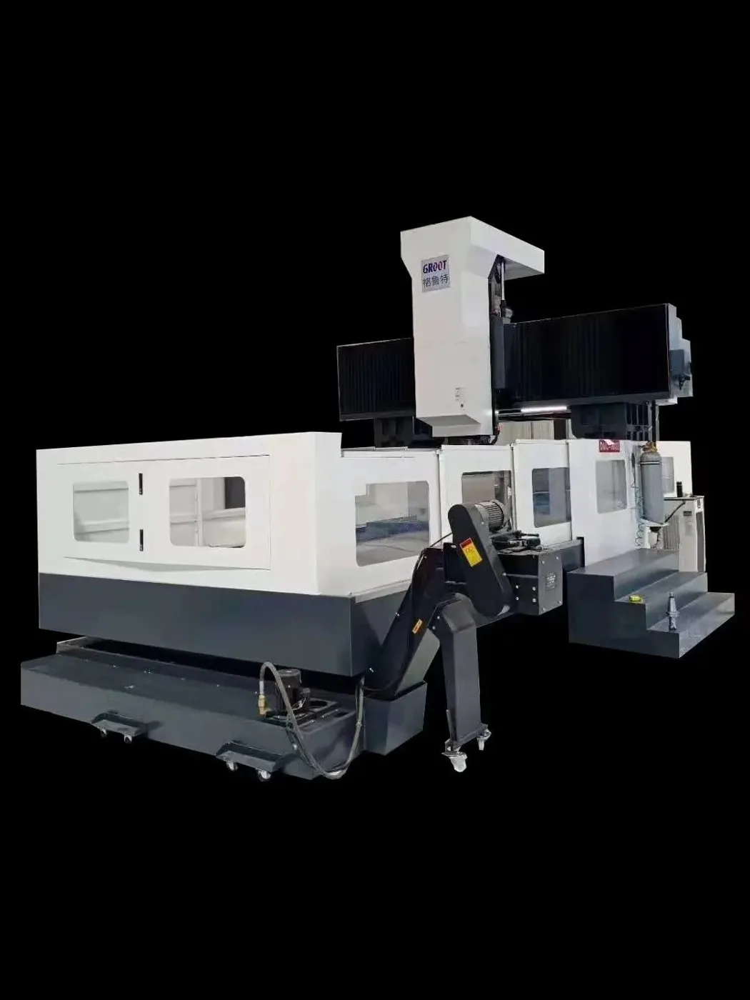
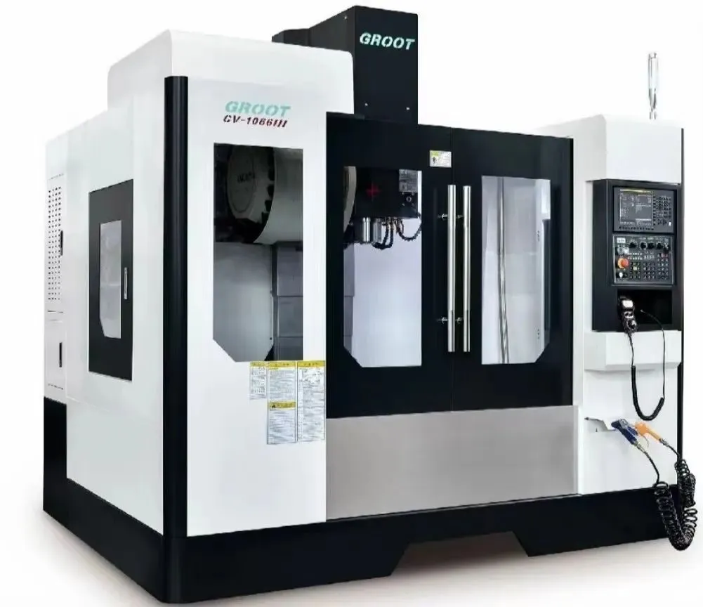
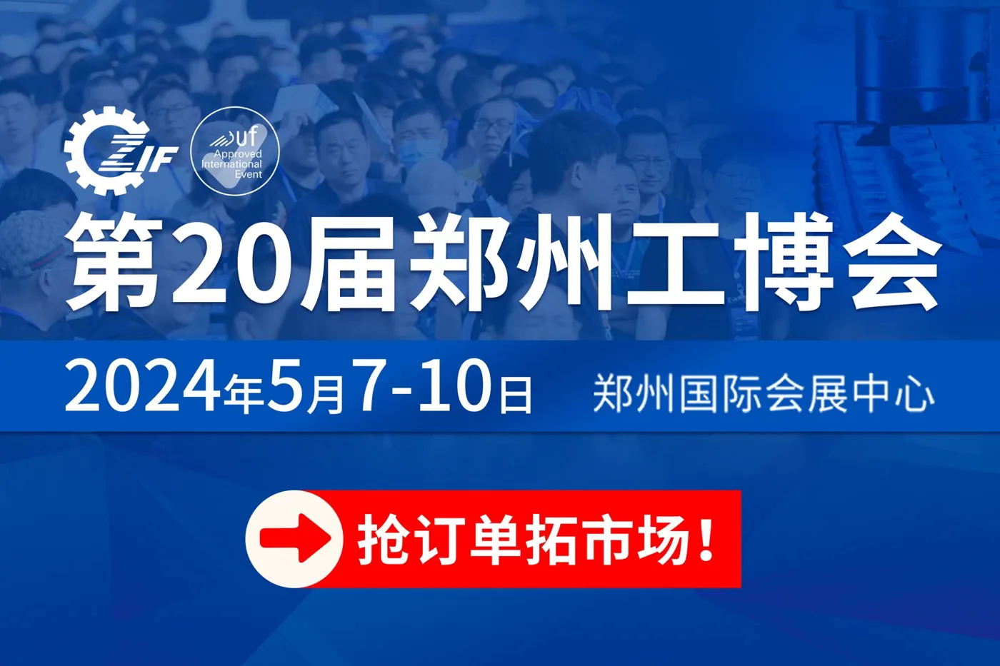

展商推荐 | 台湾顺佳邀您参观5月郑州工博会
首页 / 展商推荐 | 台湾顺佳邀您参观5月郑州工博会
优质展商推荐
台湾顺佳
展位号：CT055
诚邀您参观
2024郑州工业装备博览会
5月7-10日|郑州国际会展中心

识别二维码，快速进行观众预登记
企业简介
格鲁特數控設備有限公司是一家專業從事開發設計、生產製造數控機床和CNC工具機的高科技企業，公司以臺灣製造技術為基礎，同時融合多家設備生產企業多年的製造經驗，不斷吸納國內外同行業的先進科研成果，發展成為今天擁有完善的生產與裝配加工中心機的專營製造商。
公司產品有立式加工中心、高速加工中心機、高速鑽孔攻牙機、龍門加工中心機、五轴加工中心機等主要客戶群為精密模具製造業、汽車製造業、電子通訊業、精密零件加工業與航空航天業等。公司一直以誠信經營。永續創新的經營理念，以最有性價比的產品和完善的產品和完善的服務，為客戶提供創最佳解決方案，為客戶創造最大的價值，提升客戶的產品競爭力。
公司將繼續秉承以高質量方針“顧客至上，市場爭先；技術為主，質量取勝：的理念，為客戶創造價值。創新研究，精益求精，竭誠滿足客戶的需求和期望。
主 營：立式加工中心系列，高速鑽孔攻牙機、龍門加工中心系列、五轴加工中心系列。
企業服務：提供更優質的產品和服務，我們一直在努力并永遠堅持不懈，我們志在打造品牌，誠實守信和互惠雙贏，我們通過不斷的技術更新和完善的服務體系幫助用戶更好的使用設備，因為專業我們不斷進步。
技術支持：專業的工程師上門為客戶解決設備選型。解決客戶各種產品的加工要求，幫助用戶選擇適合的、經濟的解決方案，讓用戶選擇的產品更具性價比。
質量控制：我們的產品通過ISO9001的品質體系和ISO14000環境管理體系認證
售後服務：遍佈全國的售後服務網絡是我們產品銷售遍佈全國的保證。
主要产品
卧式加工中心

龙门加工中心

立式加工中心

·END·
